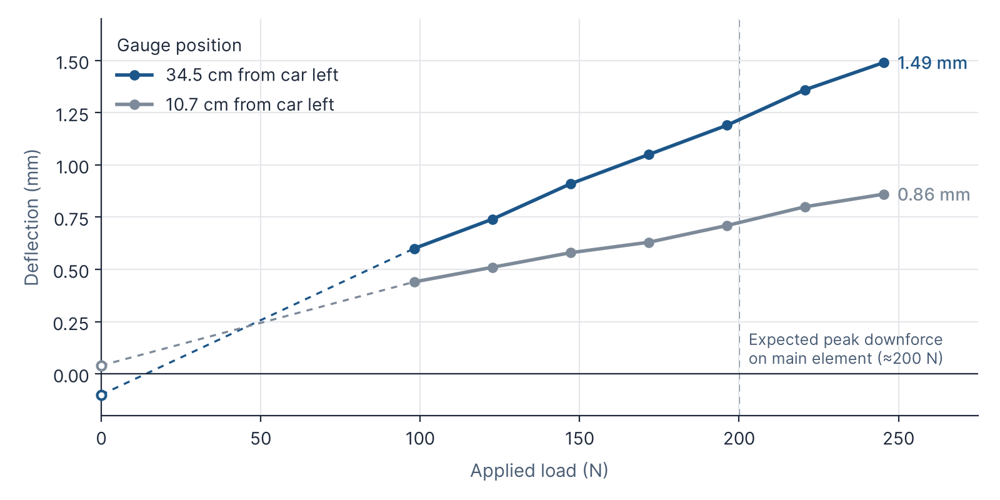

8. Future Validation
8.1 Rear Wing Loading Test
Deflection testing was conducted on the Rear Wing main element to evaluate its structural response and simulate the aerodynamic downforce it generates. The element was mounted to a jig, and two dowel gauges were positioned under the wing to measure the deflection (Figure 21). To replicate this operational downforce, mass was added to the center of the element in 10 kg and 2.5 kg increments until a total test load of 25 kg was reached (Figure 20). This maximum applied mass was specifically chosen to accurately match the maximum aerodynamic downforce expected on the main element, which is estimated to be approximately 200 N.


The set-up will be replicated in Ansys with a similar force applied to validate the material properties of our wings.
Deflection was measured in millimeters at two distinct points on the element: 10.7 cm and 34.5 cm from the car's left side. The measurements demonstrate a steady increase in structural deformation as the applied mass increases. At the maximum simulated load of 25 kg, the element exhibited a deflection of 0.86 mm at the 10.7 cm mark and a peak deflection of 1.49 mm at the 34.5 cm mark.
Table 5 lists the gauge readings at each load step, and Figure 23 plots deflection against applied load.
| Applied mass (kg) | Applied load (N) | Deflection (mm) | |
|---|---|---|---|
| 10.7 cm from car left | 34.5 cm from car left | ||
| 0 (start) | 0 | 0.04 | −0.10 |
| 10 | 98.1 | 0.44 | 0.60 |
| 12.5 | 122.6 | 0.51 | 0.74 |
| 15 | 147.2 | 0.58 | 0.91 |
| 17.5 | 171.7 | 0.63 | 1.05 |
| 20 | 196.2 | 0.71 | 1.19 |
| 22.5 | 220.7 | 0.80 | 1.36 |
| 25 (maximum) | 245.3 | 0.86 | 1.49 |

8.2 Cotton Tuft Testing

Cotton tufts will be attached to the surfaces of the car to visualize the airflow over the aerodynamic package during on-track testing. The direction and behaviour of the tufts show whether the flow stays attached or separates, and whether it is smooth or turbulent. This allows us to compare the real airflow against the streamline patterns predicted in CFD.
8.3 Pressure Validation

A pressure scanner will be used to measure surface pressures at selected points on the car and validate the pressure distributions from our simulations. These readings will be compared directly with the surface pressure plots from StarCCM+. This will show how closely the simulation matches the manufactured car, and whether geometry deviations from manufacturing affect the aerodynamic performance. The results will give us more confidence in our CFD model and support better design decisions in the future.
8.4 Limitations and Future Work
Structural validation. Due to the nature of carbon fibre layups, the experimental data may not match the Ansys data right away. This test is therefore groundwork for future batches to continue experimenting. Once the validation is complete, load studies can be used to simulate the wing geometry under these loaded conditions and to see whether the deflection affects aerodynamic performance.
Mesh independence study. All CFD results in this report come from a single mesh, so it is not yet known how much they would change if the mesh were refined. This matters because several of the design improvements are small. The R27e rear wing raised full-car downforce by 1.3% (Section 6.2.3), the front-wing changes raised it by 2–4% (Section 6.1.4), and full-car drag changed by less than 1% in every case. A mesh independence study would solve the same baseline case on at least three systematically refined meshes, with a refinement ratio above 1.3 between neighbouring meshes, and track full-car downforce and drag on each [5]. The grid convergence index (GCI) method then gives an uncertainty band for each result, and Richardson extrapolation estimates the value the mesh is converging towards [5, 6]. The same approach has been applied to Formula Student cars in STAR-CCM+ [7]. A design change smaller than this uncertainty band cannot be claimed as a real improvement. The study would also identify the coarsest mesh whose results stay within an acceptable tolerance of the finest mesh, which lowers the cost of every future simulation.
Reducing the number of iterations. A mesh independence study does not, by itself, reduce the number of iterations a simulation needs. It measures discretisation error, not iterative convergence, and a finer mesh can need more iterations rather than fewer. The ASME procedure also requires iterative convergence to be demonstrated before discretisation error is estimated [5]. Two further changes would target the iteration count directly:
- Improving mesh quality. Highly skewed or non-orthogonal cells, abrupt changes in cell size and poor prism-layer transitions all slow convergence. Where residuals stay high in one region, local refinement can help [8]. Mesh quality metrics will be checked in STAR-CCM+, and poor cells near the wings, wheels and floor will be improved.
- Monitor-based stopping criteria. Cornering simulations now run for a fixed 2000 iterations, which the check in Section 5.3 showed is comfortably enough for every cornering run tested. Residuals alone are not a reliable measure of convergence, so integrated forces should be monitored alongside them [9]. Stopping criteria on the downforce and drag monitors would end each simulation once their running averages reach an asymptotic limit [9], so that runs which settle early, as most cornering runs do by about 1000 iterations, stop early. The averaging window must be long enough to avoid stopping on a temporary plateau like the one seen in Cornering 10 (Section 5.3).
If the force monitors keep oscillating because the flow around the car is genuinely unsteady, for example in the wakes of the wheels, no change to the mesh will make a steady solution settle. In that case, averaging over the final iterations, as is done now (Section 5.3), remains the right approach. The stopping criterion should then be applied to the running average, and the size of the oscillation should be reported alongside each result.